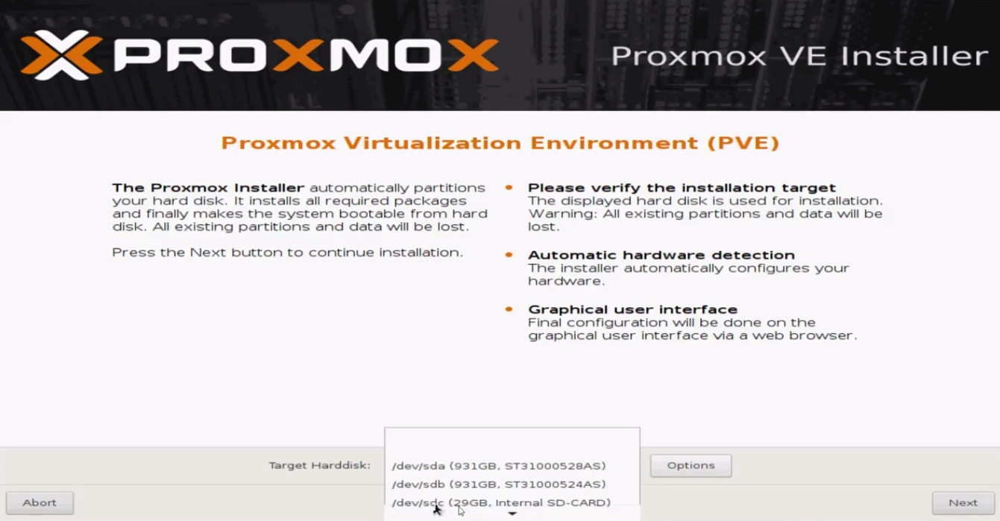
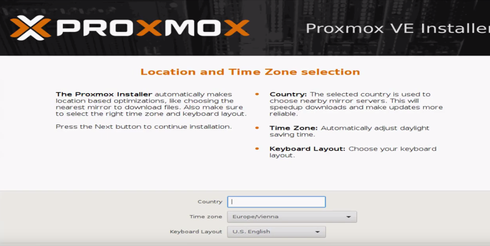
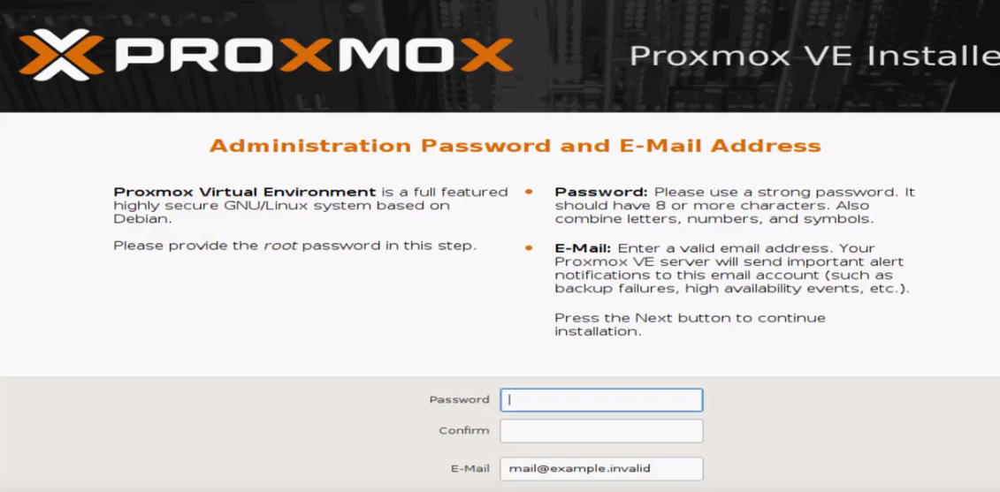
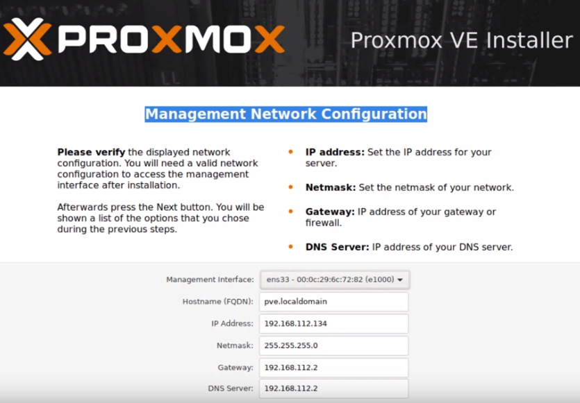
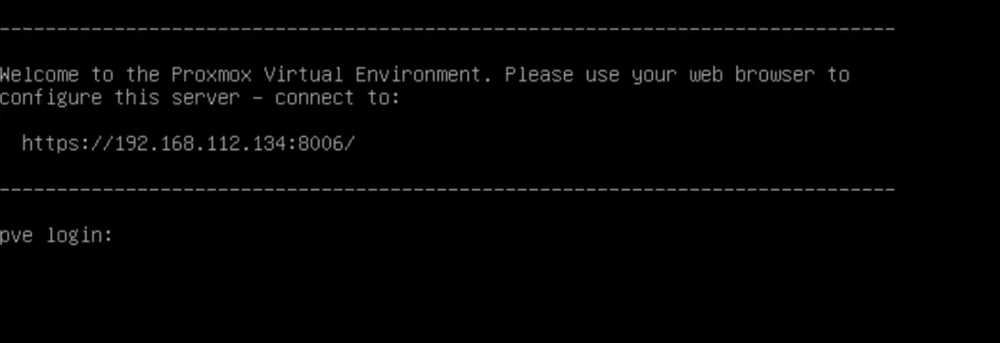

1- Seleccionaremos el disco en el que deseamos instalarlo.
Instalación y configuración de Proxmox.
2- Seleccionamos el país y distribucion de teclado.
3- Introducimos un correo y le damos una contraseña.
4- Configuramos la red. Le damos un nombre al host, una ip, mascara y DNS.
5- Una vez instalado, podrás acceder al interfaz mediante la ip que se muestre.
